Will Otterbein, A01372608
This report describes my implementation of the week2 polling / event loop lab.
Information regarding the compiling of this lab into a binary.
For this lab I have created a makefile.
You can run make & it will output the binary into a build directory.
The name of the binary is rvloop.
There are make targets, run is dependent on compilation, so if you execute the following command in your shell
make run
Make will take care of compiling & running the binary.
this assumes you have make installed already on the system as well as the
gcccompiler, as the makefile expects thegcccompiler & uses it for the make commands or recipes
To manually compile with gcc, the following command or similar should suffice
# folder & file are simply the names suggested in the lab instructions
gcc ./event-loop/my_event_loop.c -o my-bin
Once a binary has been obtained & the program is running:
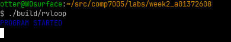
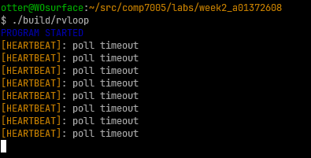
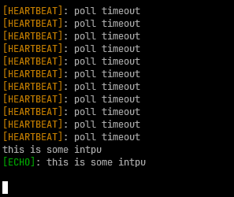
after you have had your fun of echoing your own inputs, there are two means of exiting the program.
exit via delivering the EOF with ctrl+d
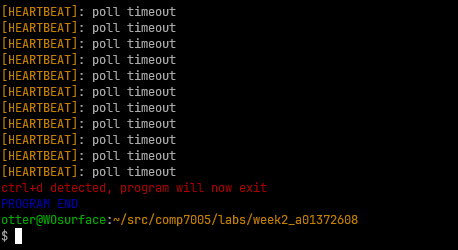
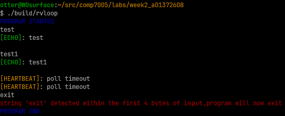
as you can see, different messages are logged for the different program exit routes.
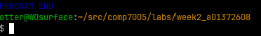
Thats the program! The next section describes the implementation.
This event loop program has the following features:
Before we get to the implementation I will describe the constants / global data of the program.
You will see at the beginning of the program source file, , that there
are a list of #defines for program constants & messages. I did this because
I like using macros for this purpose & some of these are used across functions
so const char* would need to passed around or defined globally.
The messages are written using ansi escape sequences so that different message types are distinguishable (yellow == heartbeat, green == input echo, red == error/termination, etc.).
I also
used macros to define the numeric constants POLL_TIMEOUT, and BUF_SIZE.
POLL_TIMEOUT is the intended interval between event loop iterations
(aka how long poll should block), the value of this is 3000ms
(or 3s from the lab). A BUF_SIZE is also declared, this is the size of the
buffer which STDIN contents are read into (more about this later).
You will also see the pDone flag declared as a global int type, this flag
when set will break out of the event loop in main. In the beginning of main
this flag is reset to 0.
Now that the programs global data & constants have been described, The following sections will detail the implementation of the event loop program.
mainThe program begins by initializing the necessary variables for time-keeping.
| variable name | purpose |
|---|---|
stime |
start time of the program, used to compute the initial deadline, dead |
rtime |
running time, computed each iteration of the event loop |
dead |
the next deadline, initially set to stime + POLL_TIMEOUT |
left |
for each iteration of the event, calculated as dead - rtime |
wait |
time (ms) to wait poll, if left is < 0 this value is clamped to 0 |
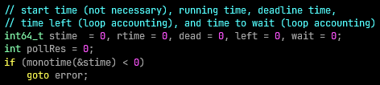
Then a start message is logged w/ the initial program time (monotime function
implementation described later).
Next, the pollfd struct s used by the program is initialized, fd is set to
STDIN_FILENO, the file descriptor number for STDIN, and events is set to
POLLIN as this is the only event required for this program (revents is
also initialized to 0). The pDone flag is reset & the initial
interval deadline dead is calculated.
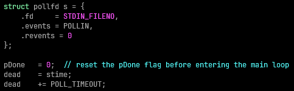
Following section will describe the event loop's implementation.
POLLThis section of the main method constitutes the event loop logic:
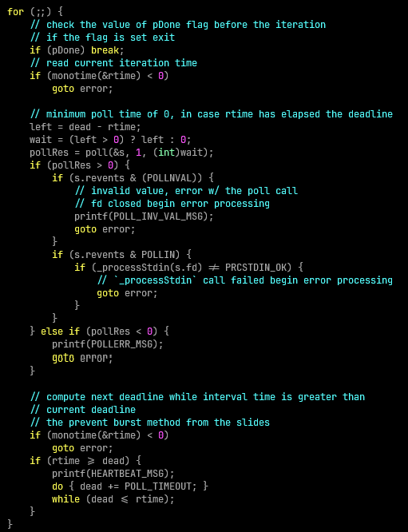
The first thing per iteration is to check whether the pDone flag has been
set, if so, break out of the event loop as the program should be done.
Then, the running time, rtime, is calculated using the monotime helper (w/
error handling). Before poll itself can be called, the duration of poll needs
to be calculated based of the difference between dead & rtime, stored in left.
If the value of left is less than zero (meaning we have exceeded the deadline),
a wait value of zero is used.
poll is then invoked with the address of s (pollfd struct), a count of 1, and
the calculated wait, with the result of poll being stored in pollRes.
The next bit of logic is handling the result of calling poll.
Once poll stops blocking, we check if pollRes > 0 because that means there is data in STDIN to process. Before we pass the processing of that data to _processStdin, the program
checks the revents to make sure that its not POLLINVAL, if it is then we jump
to error processing as this means that the file descriptor passed to poll was
closed, meaning STDIN has been closed. If revents is POLLIN, then we can
proceed with processing STDIN via _processStdin, once that call completes
we check its return code & if its not PRCSTDIN_OK then this function failed
& we jump to error processing & exit (see the _processStdin section for more
info about what the program does w/ STDIN & its return codes).
If pollRes < 0 there was an error calling poll, we print the message
POLLERR_MSG & perform goto error to jump ahead to the main functions error
handling / cleanup logic.
if I understood the
manpage forpollcorrectly,POLLERR&POLLHUPapply when the file descriptors passed topollvia thepollfdstruct are sockets but we are working w/ STDIN so this does not apply. That is why I don't look for these inrevents
Finally, the next deadline is calculated. I have implemented the version of this
calculation that prevents a burst of messages, so while the current deadline
is less than the running time POLL_TIMEOUT is added to the deadline & heartbeats
, HEARTBEAT_MSG are logged -- this logic is executed irrespective of the result of poll, so when poll returns 0 ie the timeout has been reached then heartbeats are
still logged.
At some point the user will trigger the end of the program, what this really
means is that pDone is set, when that happens the loop is broken out of &
the program logs PROGRAM_END_MSG & returns w/ exit code 0.
main does not allocate any heap memory, so there really is no cleanup to be
done, but we do log PROGRAM_ERROR_EXIT_MSG & return with an exit status of 1.
_processStdin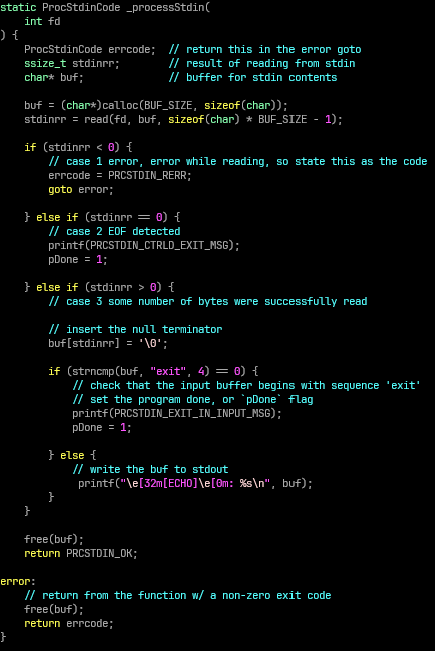
Recall from the description of the event loop that this method is invoked when
pipe returns some n > 0 (for this program it will be 1) & that revents is
set to POLLIN, meaning there is data to be read. _processStdin is invoked
w/ being passed s.fd w/ the parameter name fd.
there are three variables defined by _processStdin:
| variable name | purpose |
|---|---|
errcode |
of the enum type ProcStdinCode which abstracts the return codes for this function, 0 = OK, 1 = ERROR |
stdinn |
ssize_t result of read syscall on the passed fd, which will be STDIN |
buf |
char* buffer where STDIN contents will be written |
fd (STDIN)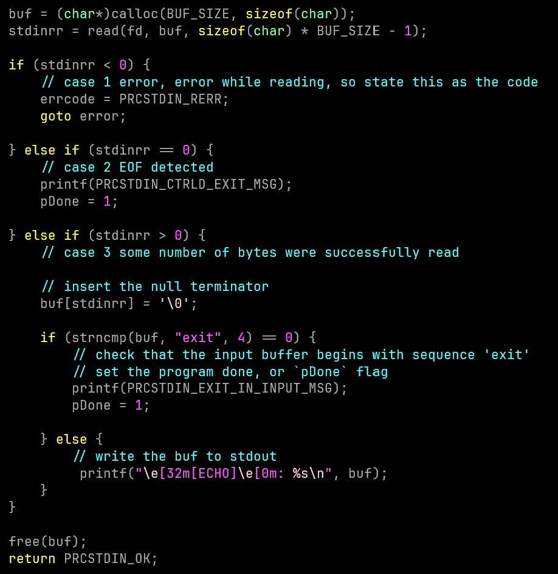
In order to satisfy the required functionality of the program, we need to
read the contents of STDIN, which is the file descriptor value of the fd parameter.
buf requires allocation at this point of the function & so a call to calloc
is made requesting a chunk of memory defined by BUF_SIZE.
Now that we have memory to write STDIN to, we can execute the read syscall
(we subtract one in order to provide a space for a \0 terminator character to
be injected). We perform error checking against read, if it returns n < 0,
then there was an issue executing read & we goto the error handling & cleanup
section of _processStdin, assigning errcode to the ProcStdinCode value
PRCSTDIN_RERR (1). If read returns n == 0, then EOF has been detected in
STDIN & the program will exit (delivering CTRL+D as an input), so pDone is
set to 1. Otherwise, if read returns n > 0, then at the nth index (so at most
255 or the very end of the buffer) we set the character in the buffer to be \0
in order that it is a valid string & printf is used to echo the buffer
contents to STDOUT.
An additional exit condition of the program is whether the buffer contents have
'exit' in them. This is very simply determined via strncmp w/ the buffer &
"exit" literal where strncmp is 0 (ie no differences between the first 4
characters of the strings).
Finally, the buffer (buf) is freed & in the regular exit case PRCSTDIN_OK is
returned.
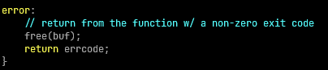
In the error exit case, _processStdin still needs to free buf. It returns the
code stored in errcode.
return codes for
_processStdinare defined in theProcStdinCodeenum type.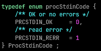
monotime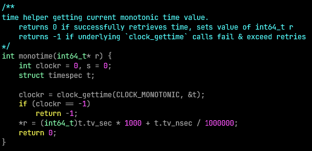
A helper function to get monotonic time. Accepts and address to int64_t r
which it writes monotime ms to.
| variable name | purpose |
|---|---|
clockr |
to store the return value of clock_gettime |
t |
struct timespec instance clock_gettime will write monotime to |
This helper simply takes care of calling clock_gettime w/ the CLOCK_MONOTONIC
& address to t. The return is stored in clockr & if this is -1 then -1 is
returned from the function (as an error case to be checked by callers). Otherwise
t struct timespec is populated w/ .tv_sec & tv_nsec values, these are
converted to ms, summed & that number is assigned to r w/ 0 being returned
(success).